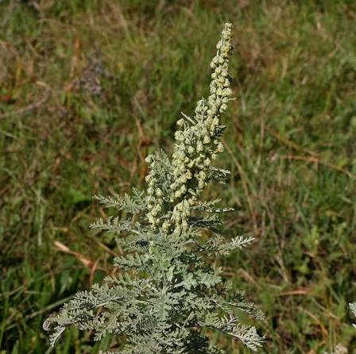

Field Documentation
Field Research
Methodology, sites, and visual documentation from ongoing data collection.
Data Collection Methodology
Led by Derartu Taye under EBI Shashemene Biodiversity Garden protocols.
Field data collection follows a structured ethnobotanical survey protocol adapted from EBI guidelines and international ethnobotanical best practices. Each collection event produces a linked set of outputs: specimen photograph, multilingual name record, traditional use narrative, and collection metadata.
- Site selection in consultation with EBI field supervisors and local community liaisons.
- Photographic documentation of plant in situ and as collected specimen, with GPS coordinates logged.
- Structured interviews with community knowledge-holders using informed consent protocols.
- Recording of trilingual nomenclature: English common name, Afaan Oromo name, Amharic name (Ge'ez script), and scientific binomial.
- Documentation of traditional use, preparation method, plant part used, and seasonal availability.
- Entry into digital archive with verification status: Field Reported → Cross-Referenced → Lab Verified.
- Cross-referencing with EBI herbarium specimens where available.
Fieldwork Gallery
Selected images from collection sites across the Bale-Shashemene region.



Collection Sites Map
Primary documentation sites in the Bale-Shashemene highlands and Sidama Zone.
Static map placeholder. Replace with surveyed site map showing GPS-documented collection points.